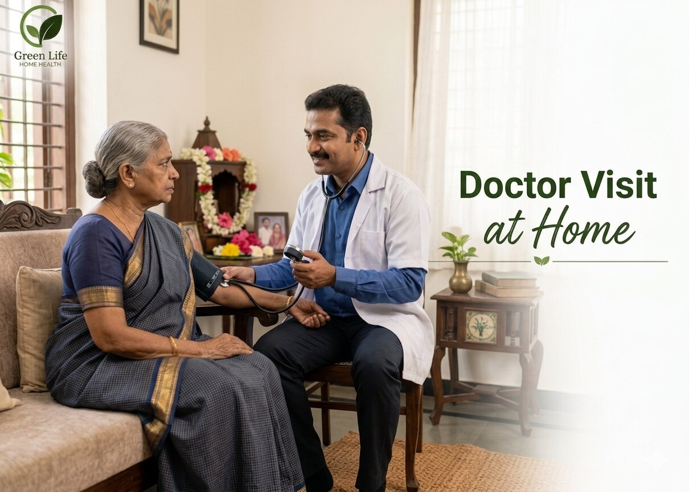

Request
Share patient details, symptoms and preferred timing.
Medical consultation at home for patients who need professional review without travel strain.

Doctor visits at home help elderly, recovering and bedridden patients receive review and guidance without exhausting travel.
Patients needing checkups, recovery guidance, medication review, elderly consultation, or follow-up at home receive convenient and professional medical attention without the need to visit a clinic or hospital. This service ensures proper health assessment, treatment monitoring, and personalized advice based on the patient’s condition and recovery progress. It helps maintain continuity of care while providing comfort, safety, and expert supervision in a familiar home environment.
Share patient details, symptoms and preferred timing.
The visit is coordinated based on availability and location.
The doctor examines and advises on next steps.
Families can coordinate further care if nursing or support is needed.
Vitals check, symptom review and medical history update.
Prescription check, dosage verification and refill planning.
Next visit scheduling, test coordination and care coordination.
Sample collection coordination and report follow-up.
Clear explanation of doctor's advice and home care steps.
Book a consultation for an elderly, bedridden or recovering patient.